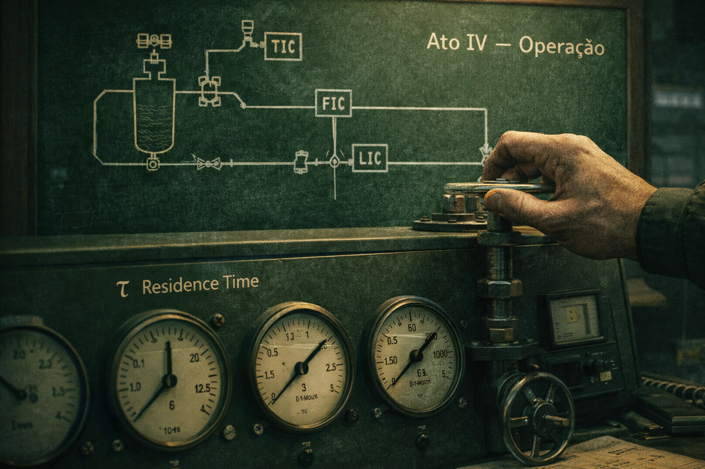

ATO V — Soberania (O Dossiê)
Série RU 1991: A Essência da Soberania · Episódio 04
Maestria: os cinco atos integrados
O momento em que o engenheiro aperta F10 é o momento em que todo o rigor técnico se converte em documento. Adsorção, PFR, Cinética e Operação — a sÃntese dos quatro atos anteriores aparece na tela: tabelas rigorosas, equação integrada, assunto da prova. O Dossiê da Soberania não é um relatório qualquer; é a prova impressa de que o fundamento foi respeitado. Em 1991 seria papel monospace na mesa do professor; hoje é o mesmo conteúdo, gravado em .txt e em imagem, com estética de relatório técnico: fonte mono, bordas secas, nenhum enfeite.
Quem completa os cinco atos e dispara F10 não recebe um certificado genérico — recebe o Dossiê de Campo Largo: o legado de 1991 consolidado em arquivo. O botão [ GRAB DOSSIÊ ] existe para isso: materializar o conhecimento. O Ato V entrega o documento inquestionável.
Legenda LinkedIn (engajamento)
Hashtags
Navegação da série (binge-reading)
Chamada · Ep.01 · Ep.02 · Ep.03 · Ep.04 · EpÃlogo
Contato
- E-mail: suporte@caracore.com.br
- Site: www.caracore.com.br
- LinkedIn: Cara Core Informática
Ato I — O Portal · Ato II — A Camada InvisÃvel · Ato III — O Pulso · Ato IV — Operação · Ato V — Soberania. EpÃlogo da série no link abaixo.
EpÃlogo — 5 de maio de 2026
Artigo publicado em 30 de abril de 2026
© 2026 Cara Core Informática. Todos os direitos reservados.